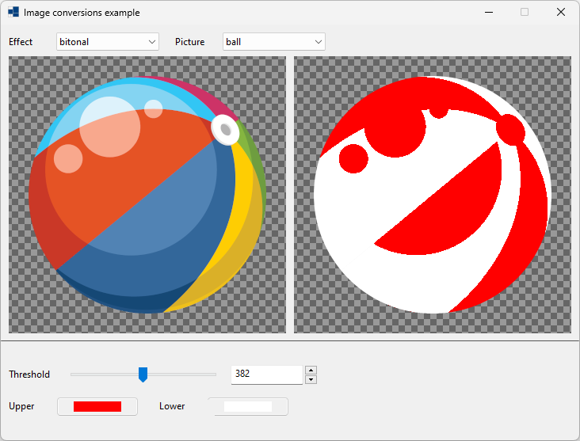
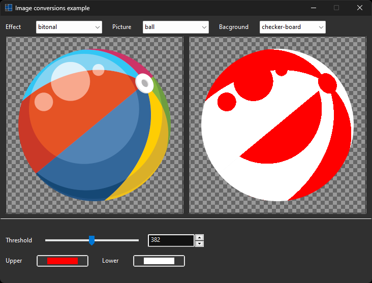
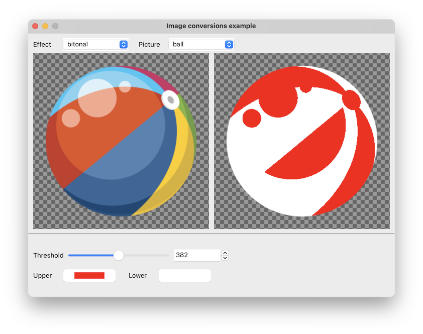
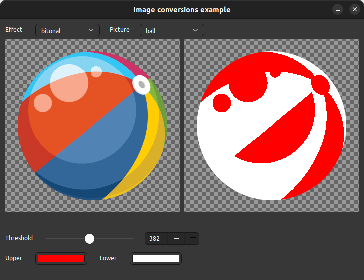

|
xtd
0.2.0
|
Loading...
Searching...
No Matches
image_converter.cpp
shows how to use xtd::drawing::graphics::image_converter class.
- Windows
- 

- macOS
- 

- Gnome


85 picures_panel.border_sides(xtd::forms::border_sides::bottom).border_style(xtd::forms::border_style::inset).dock(xtd::forms::dock_style::top);
87 effect_choice.selected_value_changed += {*this, &form1::on_effect_choice_selected_value_changed};
88 picture_choice.selected_value_changed += {*this, &form1::on_picture_choice_selected_value_changed};
90 threshold_bitonal_numeric_up_down.value_changed += [&] {threshold_bitonal_track_bar.value(as<int32>(threshold_bitonal_numeric_up_down.value()));};
93 adjusted_image = image_converter::bitonal(original_image(), threshold_bitonal_track_bar.value(), upper_color_bitonal_color_picker.color(), lower_color_bitonal_color_picker.color());
97 adjusted_image = image_converter::bitonal(original_image(), threshold_bitonal_track_bar.value(), upper_color_bitonal_color_picker.color(), lower_color_bitonal_color_picker.color());
101 adjusted_image = image_converter::bitonal(original_image(), threshold_bitonal_track_bar.value(), upper_color_bitonal_color_picker.color(), lower_color_bitonal_color_picker.color());
105 radius_blur_numeric_up_down.value_changed += [&] {radius_blur_track_bar.value(as<int32>(radius_blur_numeric_up_down.value()));};
112 percent_brightness_numeric_up_down.value_changed += [&] {percent_brightness_track_bar.value(as<int32>(percent_brightness_numeric_up_down.value()));};
115 adjusted_image = image_converter::brightness(original_image(), percent_brightness_track_bar.value() / 100.0);
119 percent_color_numeric_up_down.value_changed += [&] {percent_color_track_bar.value(as<int32>(percent_color_numeric_up_down.value()));};
122 adjusted_image = image_converter::color(original_image(), color_color_color_picker.color(), percent_color_track_bar.value() / 100.0);
126 adjusted_image = image_converter::color(original_image(), color_color_color_picker.color(), percent_color_track_bar.value() / 100.0);
130 threshold_color_extraction_numeric_up_down.value_changed += [&] {threshold_color_extraction_track_bar.value(as<int32>(threshold_color_extraction_numeric_up_down.value()));};
133 adjusted_image = image_converter::color_extraction(original_image(), threshold_color_extraction_track_bar.value(), extraction_color_color_extraction_color_picker.color(), other_pixels_color_color_extraction_color_picker.color());
137 adjusted_image = image_converter::color_extraction(original_image(), threshold_color_extraction_track_bar.value(), extraction_color_color_extraction_color_picker.color(), other_pixels_color_color_extraction_color_picker.color());
141 adjusted_image = image_converter::color_extraction(original_image(), threshold_color_extraction_track_bar.value(), extraction_color_color_extraction_color_picker.color(), other_pixels_color_color_extraction_color_picker.color());
145 threshold_color_substitution_numeric_up_down.value_changed += [&] {threshold_color_substitution_track_bar.value(as<int32>(threshold_color_substitution_numeric_up_down.value()));};
147 threshold_color_substitution_numeric_up_down.value(threshold_color_substitution_track_bar.value());
148 adjusted_image = image_converter::color_substitution(original_image(), threshold_color_substitution_track_bar.value(), source_color_color_substitution_color_picker.color(), new_color_color_substitution_color_picker.color());
152 adjusted_image = image_converter::color_substitution(original_image(), threshold_color_substitution_track_bar.value(), source_color_color_substitution_color_picker.color(), new_color_color_substitution_color_picker.color());
156 adjusted_image = image_converter::color_substitution(original_image(), threshold_color_substitution_track_bar.value(), source_color_color_substitution_color_picker.color(), new_color_color_substitution_color_picker.color());
160 percent_contrast_numeric_up_down.value_changed += [&] {percent_contrast_track_bar.value(as<int32>(percent_contrast_numeric_up_down.value()));};
163 adjusted_image = image_converter::contrast(original_image(), percent_contrast_track_bar.value() / 100.0);
168 adjusted_image = disabled_switch_button.checked() ? bitmap {image_converter::disabled(original_image(), adjusted_picture_panel.back_color())} : original_image();
172 radius_drop_shadow_numeric_up_down.value_changed += [&] {radius_drop_shadow_track_bar.value(as<int32>(radius_drop_shadow_numeric_up_down.value()));};
175 adjusted_image = image_converter::drop_shadow(original_image(), horizontal_drop_shadow_track_bar.value(), vertical_drop_shadow_track_bar.value(), radius_drop_shadow_track_bar.value(), color_drop_shadow_color_picker.color());
178 horizontal_drop_shadow_numeric_up_down.value_changed += [&] {horizontal_drop_shadow_track_bar.value(as<int32>(horizontal_drop_shadow_numeric_up_down.value()));};
181 adjusted_image = image_converter::drop_shadow(original_image(), horizontal_drop_shadow_track_bar.value(), vertical_drop_shadow_track_bar.value(), radius_drop_shadow_track_bar.value(), color_drop_shadow_color_picker.color());
184 vertical_drop_shadow_numeric_up_down.value_changed += [&] {vertical_drop_shadow_track_bar.value(as<int32>(vertical_drop_shadow_numeric_up_down.value()));};
187 adjusted_image = image_converter::drop_shadow(original_image(), horizontal_drop_shadow_track_bar.value(), vertical_drop_shadow_track_bar.value(), radius_drop_shadow_track_bar.value(), color_drop_shadow_color_picker.color());
191 adjusted_image = image_converter::drop_shadow(original_image(), horizontal_drop_shadow_track_bar.value(), vertical_drop_shadow_track_bar.value(), radius_drop_shadow_track_bar.value(), color_drop_shadow_color_picker.color());
195 red_correction_gamma_correction_numeric_up_down.value_changed += [&] {red_correction_gamma_correction_track_bar.value(as<int32>(red_correction_gamma_correction_numeric_up_down.value() * 10));};
197 red_correction_gamma_correction_numeric_up_down.value(red_correction_gamma_correction_track_bar.value() / 10.0);
198 adjusted_image = image_converter::gamma_correction(original_image(), red_correction_gamma_correction_track_bar.value() / 10.0, green_correction_gamma_correction_track_bar.value() / 10.0, blue_correction_gamma_correction_track_bar.value() / 10.0);
202 green_correction_gamma_correction_numeric_up_down.value_changed += [&] {green_correction_gamma_correction_track_bar.value(as<int32>(green_correction_gamma_correction_numeric_up_down.value() * 10));};
204 green_correction_gamma_correction_numeric_up_down.value(green_correction_gamma_correction_track_bar.value() / 10.0);
205 adjusted_image = image_converter::gamma_correction(original_image(), red_correction_gamma_correction_track_bar.value() / 10.0, green_correction_gamma_correction_track_bar.value() / 10.0, blue_correction_gamma_correction_track_bar.value() / 10.0);
209 blue_correction_gamma_correction_numeric_up_down.value_changed += [&] {blue_correction_gamma_correction_track_bar.value(as<int32>(blue_correction_gamma_correction_numeric_up_down.value() * 10));};
211 blue_correction_gamma_correction_numeric_up_down.value(blue_correction_gamma_correction_track_bar.value() / 10.0);
212 adjusted_image = image_converter::gamma_correction(original_image(), red_correction_gamma_correction_track_bar.value() / 10.0, green_correction_gamma_correction_track_bar.value() / 10.0, blue_correction_gamma_correction_track_bar.value() / 10.0);
216 percent_grayscale_numeric_up_down.value_changed += [&] {percent_grayscale_track_bar.value(as<int32>(percent_grayscale_numeric_up_down.value()));};
219 adjusted_image = image_converter::grayscale(original_image(), percent_grayscale_track_bar.value() / 100.0);
223 percent_hue_rotate_numeric_up_down.value_changed += [&] {percent_hue_rotate_track_bar.value(as<int32>(percent_hue_rotate_numeric_up_down.value()));};
226 adjusted_image = image_converter::hue_rotate(original_image(), percent_hue_rotate_track_bar.value());
230 percent_invert_numeric_up_down.value_changed += [&] {percent_invert_track_bar.value(as<int32>(percent_invert_numeric_up_down.value()));};
233 adjusted_image = image_converter::invert(original_image(), percent_invert_track_bar.value() / 100.0);
237 percent_opacity_numeric_up_down.value_changed += [&] {percent_opacity_track_bar.value(as<int32>(percent_opacity_numeric_up_down.value()));};
240 adjusted_image = image_converter::opacity(original_image(), percent_opacity_track_bar.value() / 100.0);
244 rescale_width_numeric_up_down.value_changed += [&] {rescale_width_track_bar.value(as<int32>(rescale_width_numeric_up_down.value()));};
247 if (rescale_maintain_aspect_ratio_check_box.checked()) rescale_height_numeric_up_down.value(as<int>(rescale_width_track_bar.value() / rescale_aspect_ratio));
248 adjusted_image = image_converter::rescale(original_image(), {rescale_width_track_bar.value(), rescale_height_track_bar.value()});
252 rescale_height_numeric_up_down.value_changed += [&] {rescale_height_track_bar.value(as<int32>(rescale_height_numeric_up_down.value()));};
255 if (rescale_maintain_aspect_ratio_check_box.checked()) rescale_width_numeric_up_down.value(as<int>(rescale_height_track_bar.value() * rescale_aspect_ratio));
256 adjusted_image = image_converter::rescale(original_image(), {rescale_width_track_bar.value(), rescale_height_track_bar.value()});
260 resize_width_numeric_up_down.value_changed += [&] {resize_width_track_bar.value(as<int32>(resize_width_numeric_up_down.value()));};
263 if (resize_maintain_aspect_ratio_check_box.checked()) resize_height_numeric_up_down.value(as<int>(resize_width_track_bar.value() / resize_aspect_ratio));
264 adjusted_image = image_converter::resize(original_image(), {resize_width_track_bar.value(), resize_height_track_bar.value()});
268 resize_height_numeric_up_down.value_changed += [&] {resize_height_track_bar.value(as<int32>(resize_height_numeric_up_down.value()));};
271 if (resize_maintain_aspect_ratio_check_box.checked()) resize_width_numeric_up_down.value(as<int>(resize_height_track_bar.value() * resize_aspect_ratio));
272 adjusted_image = image_converter::resize(original_image(), {resize_width_track_bar.value(), resize_height_track_bar.value()});
277 adjusted_image = image_converter::rotate_flip(original_image(), as<rotate_flip_type>(rotate_flip_choice.selected_item().tag()));
281 percent_saturate_numeric_up_down.value_changed += [&] {percent_saturate_track_bar.value(as<int32>(percent_saturate_numeric_up_down.value()));};
284 adjusted_image = image_converter::saturate(original_image(), percent_saturate_track_bar.value() / 100.0);
288 percent_sepia_numeric_up_down.value_changed += [&] {percent_sepia_track_bar.value(as<int32>(percent_sepia_numeric_up_down.value()));};
291 adjusted_image = image_converter::sepia(original_image(), percent_sepia_track_bar.value() / 100.0);
295 threshold_threshold_numeric_up_down.value_changed += [&] {threshold_threshold_track_bar.value(as<int32>(threshold_threshold_numeric_up_down.value()));};
298 adjusted_image = image_converter::threshold(original_image(), threshold_threshold_track_bar.value());
305 e.graphics().draw_image(original_image(), rectangle {{(original_picture_panel.width() - original_image().width()) / 2, (original_picture_panel.height() - original_image().height()) / 2}, original_image().size()});
306 control_paint::draw_border_from_back_color(original_picture_panel, e.graphics(), xtd::forms::border_style::theme, xtd::forms::border_sides::all, original_picture_panel.back_color(), rectangle::add(e.clip_rectangle(), -1, -1));
312 e.graphics().draw_image(adjusted_image, rectangle {{(adjusted_picture_panel.width() - adjusted_image.width()) / 2, (adjusted_picture_panel.height() - adjusted_image.height()) / 2}, adjusted_image.size()});
313 control_paint::draw_border_from_back_color(adjusted_picture_panel, e.graphics(), xtd::forms::border_style::theme, xtd::forms::border_sides::all, adjusted_picture_panel.back_color(), rectangle::add(e.clip_rectangle(), -1, -1));
326 if (background_choice.selected_item() == "checker-board") g.fill_rectangle(hatch_brush {xtd::drawing::drawing_2d::hatch_style::wide_checker_board, xtd::drawing::color::from_argb(0x66, 0x66, 0x66), xtd::drawing::color::from_argb(0x99, 0x99, 0x99)}, rectangle);
327 else if (background_choice.selected_item() == "control") g.fill_rectangle(system_brushes::control(), rectangle);
328 else if (background_choice.selected_item() == "black") g.fill_rectangle(brushes::black(), rectangle);
329 else if (background_choice.selected_item() == "white") g.fill_rectangle(brushes::white(), rectangle);
361 rescale_aspect_ratio = as<double>(original_image().size().width()) / original_image().size().height();
364 resize_aspect_ratio = as<double>(original_image().size().width()) / original_image().size().height();
376 if (effect_choice.selected_item() == "bitonal") adjusted_image = image_converter::bitonal(original_image(), threshold_bitonal_track_bar.value(), upper_color_bitonal_color_picker.color(), lower_color_bitonal_color_picker.color());
377 else if (effect_choice.selected_item() == "blur") adjusted_image = image_converter::blur(original_image(), radius_blur_track_bar.value());
378 else if (effect_choice.selected_item() == "brightness") adjusted_image = image_converter::brightness(original_image(), percent_brightness_track_bar.value() / 100.0);
379 else if (effect_choice.selected_item() == "color") adjusted_image = image_converter::color(original_image(), color_color_color_picker.color(), percent_color_track_bar.value() / 100.0);
380 else if (effect_choice.selected_item() == "color-extraction") adjusted_image = image_converter::color_extraction(original_image(), threshold_color_extraction_track_bar.value(), extraction_color_color_extraction_color_picker.color(), other_pixels_color_color_extraction_color_picker.color());
381 else if (effect_choice.selected_item() == "color-substitution") adjusted_image = image_converter::color_substitution(original_image(), threshold_color_substitution_track_bar.value(), source_color_color_substitution_color_picker.color(), new_color_color_substitution_color_picker.color());
382 else if (effect_choice.selected_item() == "contrast") adjusted_image = image_converter::contrast(original_image(), percent_contrast_track_bar.value() / 100.0);
383 else if (effect_choice.selected_item() == "disabled") adjusted_image = disabled_switch_button.checked() ? bitmap {image_converter::disabled(original_image(), adjusted_picture_panel.back_color())} : original_image();
384 else if (effect_choice.selected_item() == "drop-shadow") adjusted_image = image_converter::drop_shadow(original_image(), horizontal_drop_shadow_track_bar.value(), vertical_drop_shadow_track_bar.value(), radius_drop_shadow_track_bar.value(), color_drop_shadow_color_picker.color());
385 else if (effect_choice.selected_item() == "gamma-correction") adjusted_image = image_converter::gamma_correction(original_image(), red_correction_gamma_correction_track_bar.value() / 10.0, green_correction_gamma_correction_track_bar.value() / 10.0, blue_correction_gamma_correction_track_bar.value() / 10.0);
386 else if (effect_choice.selected_item() == "grayscale") adjusted_image = image_converter::grayscale(original_image(), percent_grayscale_track_bar.value() / 100.0);
387 else if (effect_choice.selected_item() == "hue-rotate")adjusted_image = image_converter::hue_rotate(original_image(), percent_hue_rotate_track_bar.value());
388 else if (effect_choice.selected_item() == "invert") adjusted_image = image_converter::invert(original_image(), percent_invert_track_bar.value() / 100.0);
389 else if (effect_choice.selected_item() == "opacity") adjusted_image = image_converter::opacity(original_image(), percent_opacity_track_bar.value() / 100.0);
390 else if (effect_choice.selected_item() == "rescale") adjusted_image = image_converter::rescale(original_image(), {resize_width_track_bar.value(), rescale_height_track_bar.value()});
391 else if (effect_choice.selected_item() == "resize") adjusted_image = image_converter::resize(original_image(), {resize_width_track_bar.value(), resize_height_track_bar.value()});
392 else if (effect_choice.selected_item() == "rotate-flip") adjusted_image = image_converter::rotate_flip(original_image(), as<rotate_flip_type>(rotate_flip_choice.selected_item().tag()));
393 else if (effect_choice.selected_item() == "saturate") adjusted_image = image_converter::saturate(original_image(), percent_saturate_track_bar.value() / 100.0);
394 else if (effect_choice.selected_item() == "sepia") adjusted_image = image_converter::sepia(original_image(), percent_sepia_track_bar.value() / 100.0);
395 else if (effect_choice.selected_item() == "threshold") adjusted_image = image_converter::threshold(original_image(), threshold_threshold_track_bar.value());
434 double rescale_aspect_ratio = as<double>(original_image().size().width()) / original_image().size().height();
435 double resize_aspect_ratio = as<double>(original_image().size().width()) / original_image().size().height();
439 track_bar threshold_bitonal_track_bar = track_bar::create(bitonal_panel, 382, 0, 3 * byte_object::max_value, {80, 30}, {200, 25});
440 numeric_up_down threshold_bitonal_numeric_up_down = numeric_up_down::create(bitonal_panel, 382, 0, 3 * byte_object::max_value, {290, 30}, {110, 25});
442 color_picker upper_color_bitonal_color_picker = color_picker::create(bitonal_panel, color::green, {70, 70});
444 color_picker lower_color_bitonal_color_picker = color_picker::create(bitonal_panel, color::white, {260, 70});
448 track_bar radius_blur_track_bar = track_bar::create(blur_panel, 10, 0, 100, {60, 50}, {200, 25});
449 numeric_up_down radius_blur_numeric_up_down = numeric_up_down::create(blur_panel, 10, 0, 100, {270, 50}, {130, 25});
452 label percent_brightness_label = label::create(brightness_panel, "Percent", {10, 54}, {70, 23});
453 track_bar percent_brightness_track_bar = track_bar::create(brightness_panel, 125, 0, 200, {80, 50}, {200, 25});
454 numeric_up_down percent_brightness_numeric_up_down = numeric_up_down::create(brightness_panel, 125, 0, 200, {290, 50}, {110, 25});
458 track_bar percent_color_track_bar = track_bar::create(color_panel, 200, 0, 200, {80, 30}, {200, 25});
459 numeric_up_down percent_color_numeric_up_down = numeric_up_down::create(color_panel, 200, 0, 200, {290, 30}, {110, 25});
461 color_picker color_color_color_picker = color_picker::create(color_panel, color::red, {70, 70});
464 label threshold_color_extraction_label = label::create(color_extraction_panel, "Threshold", {10, 34}, {70, 23});
465 track_bar threshold_color_extraction_track_bar = track_bar::create(color_extraction_panel, 260, 0, 3 * byte_object::max_value, {80, 30}, {200, 25});
466 numeric_up_down threshold_color_extraction_numeric_up_down = numeric_up_down::create(color_extraction_panel, 260, 0, 3 * byte_object::max_value, {290, 30}, {110, 25});
467 label extraction_color_color_extraction_label = label::create(color_extraction_panel, "Extraction color", {10, 74}, {100, 23});
468 color_picker extraction_color_color_extraction_color_picker = color_picker::create(color_extraction_panel, color::green, {120, 70});
469 label other_pixels_color_color_extraction_label = label::create(color_extraction_panel, "Other pixels color", {250, 74}, {110, 23});
470 color_picker other_pixels_color_color_extraction_color_picker = color_picker::create(color_extraction_panel, color::white, {370, 70});
473 label threshold_color_substitution_label = label::create(color_substitution_panel, "Threshold", {10, 34}, {70, 23});
474 track_bar threshold_color_substitution_track_bar = track_bar::create(color_substitution_panel, 260, 0, 3 * byte_object::max_value, {80, 30}, {200, 25});
475 numeric_up_down threshold_color_substitution_numeric_up_down = numeric_up_down::create(color_substitution_panel, 260, 0, 3 * byte_object::max_value, {290, 30}, {110, 25});
476 label source_color_color_substitution_label = label::create(color_substitution_panel, "Extraction color", {10, 74}, {100, 23});
477 color_picker source_color_color_substitution_color_picker = color_picker::create(color_substitution_panel, color::green, {120, 70});
478 label new_color_color_substitution_label = label::create(color_substitution_panel, "Other pixels color", {250, 74}, {110, 23});
479 color_picker new_color_color_substitution_color_picker = color_picker::create(color_substitution_panel, color::blue, {370, 70});
483 track_bar percent_contrast_track_bar = track_bar::create(contrast_panel, 200, 0, 400, {80, 50}, {200, 25});
484 numeric_up_down percent_contrast_numeric_up_down = numeric_up_down::create(contrast_panel, 200, 0, 400, {290, 50}, {110, 25});
491 label horizontal_drop_shadow_label = label::create(drop_shadow_panel, "Horizontal", {10, 14}, {70, 23});
492 track_bar horizontal_drop_shadow_track_bar = track_bar::create(drop_shadow_panel, 8, -50, 50, {80, 10}, {160, 25});
493 numeric_up_down horizontal_drop_shadow_numeric_up_down = numeric_up_down::create(drop_shadow_panel, 8, -50, 50, {250, 10}, {110, 25});
494 label vertical_drop_shadow_label = label::create(drop_shadow_panel, "Vertical", {375, 14}, {70, 23});
495 track_bar vertical_drop_shadow_track_bar = track_bar::create(drop_shadow_panel, 8, -50, 50, {440, 10}, {160, 25});
496 numeric_up_down vertical_drop_shadow_numeric_up_down = numeric_up_down::create(drop_shadow_panel, 8, -50, 50, {610, 10}, {110, 25});
497 label radius_drop_shadow_label = label::create(drop_shadow_panel, "Radius", {10, 54}, {70, 23});
498 track_bar radius_drop_shadow_track_bar = track_bar::create(drop_shadow_panel, 10, 0, 100, {80, 50}, {200, 25});
499 numeric_up_down radius_drop_shadow_numeric_up_down = numeric_up_down::create(drop_shadow_panel, 10, 0, 100, {290, 50}, {110, 25});
501 color_picker color_drop_shadow_color_picker = color_picker::create(drop_shadow_panel, color::black, {70, 90});
504 label red_correction_gamma_correction_label = label::create(gamma_correction_panel, "Red", {10, 14}, {70, 23});
505 track_bar red_correction_gamma_correction_track_bar = track_bar::create(gamma_correction_panel, 20, 1, 50, {80, 10}, {200, 25});
506 numeric_up_down red_correction_gamma_correction_numeric_up_down = numeric_up_down::create(gamma_correction_panel, 2.0, 0.1, 5.0, {290, 10}, {110, 25});
507 label green_correction_bgamma_correction_label = label::create(gamma_correction_panel, "Green", {10, 54}, {70, 23});
508 track_bar green_correction_gamma_correction_track_bar = track_bar::create(gamma_correction_panel, 16, 1, 50, {80, 50}, {200, 25});
509 numeric_up_down green_correction_gamma_correction_numeric_up_down = numeric_up_down::create(gamma_correction_panel, 1.6, 0.1, 5.0, {290, 50}, {110, 25});
510 label blue_correction_bgamma_correction_label = label::create(gamma_correction_panel, "Blue", {10, 94}, {70, 23});
511 track_bar blue_correction_gamma_correction_track_bar = track_bar::create(gamma_correction_panel, 8, 1, 50, {80, 90}, {200, 25});
512 numeric_up_down blue_correction_gamma_correction_numeric_up_down = numeric_up_down::create(gamma_correction_panel, 0.8, 0.1, 5.0, {290, 90}, {110, 25});
516 track_bar percent_grayscale_track_bar = track_bar::create(grayscale_panel, 100, 0, 100, {80, 50}, {200, 25});
517 numeric_up_down percent_grayscale_numeric_up_down = numeric_up_down::create(grayscale_panel, 100, 0, 100, {290, 50}, {110, 25});
521 track_bar percent_hue_rotate_track_bar = track_bar::create(hue_rotate_panel, 90, 0, 360, {80, 50}, {200, 25});
522 numeric_up_down percent_hue_rotate_numeric_up_down = numeric_up_down::create(hue_rotate_panel, 90, 0, 360, {290, 50}, {110, 25});
526 track_bar percent_invert_track_bar = track_bar::create(invert_panel, 100, 0, 100, {80, 50}, {200, 25});
527 numeric_up_down percent_invert_numeric_up_down = numeric_up_down::create(invert_panel, 100, 0, 100, {290, 50}, {110, 25});
531 track_bar percent_opacity_track_bar = track_bar::create(opacity_panel, 50, 0, 100, {80, 50}, {200, 25});
532 numeric_up_down percent_opacity_numeric_up_down = numeric_up_down::create(opacity_panel, 50, 0, 100, {290, 50}, {110, 25});
536 track_bar rescale_width_track_bar = track_bar::create(rescale_panel, original_image().size().width(), 1, original_image().size().width() * 2, {60, 30}, {200, 25});
537 numeric_up_down rescale_width_numeric_up_down = numeric_up_down::create(rescale_panel, original_image().size().width(), 1, original_image().size().width() * 2, {270, 30}, {130, 25});
539 track_bar rescale_height_track_bar = track_bar::create(rescale_panel, original_image().size().height(), 1, original_image().size().height() * 2, {60, 70}, {200, 25});
540 numeric_up_down rescale_height_numeric_up_down = numeric_up_down::create(rescale_panel, original_image().size().height(), 1, original_image().size().height() * 2, {270, 70}, {130, 25});
541 check_box rescale_maintain_aspect_ratio_check_box = check_box::create(rescale_panel, "Maintain aspect ratio", check_state::checked, {420, 54}, {150, 23});
545 track_bar resize_width_track_bar = track_bar::create(resize_panel, original_image().size().width(), 1, original_image().size().width() * 2, {60, 30}, {200, 25});
546 numeric_up_down resize_width_numeric_up_down = numeric_up_down::create(resize_panel, original_image().size().width(), 1, original_image().size().width() * 2, {270, 30}, {130, 25});
548 track_bar resize_height_track_bar = track_bar::create(resize_panel, original_image().size().height(), 1, original_image().size().height() * 2, {60, 70}, {200, 25});
549 numeric_up_down resize_height_numeric_up_down = numeric_up_down::create(resize_panel, original_image().size().height(), 1, original_image().size().height() * 2, {270, 70}, {130, 25});
550 check_box resize_maintain_aspect_ratio_check_box = check_box::create(resize_panel, "Maintain aspect ratio", check_state::checked, {420, 54}, {150, 23});
554 choice rotate_flip_choice = choice::create(rotate_flip_panel, {{"rotate_none_flip_none", rotate_flip_type::rotate_none_flip_none}, {"rotate_90_flip_none", rotate_flip_type::rotate_90_flip_none}, {"rotate_180_flip_none", rotate_flip_type::rotate_180_flip_none}, {"rotate_270_flip_none", rotate_flip_type::rotate_270_flip_none}, {"rotate_none_flip_x", rotate_flip_type::rotate_none_flip_x}, {"rotate_90_flip_x", rotate_flip_type::rotate_90_flip_x}, {"rotate_180_flip_x", rotate_flip_type::rotate_180_flip_x}, {"rotate_270_flip_x", rotate_flip_type::rotate_270_flip_x}, {"rotate_none_flip_y", rotate_flip_type::rotate_none_flip_y}, {"rotate_90_flip_y", rotate_flip_type::rotate_90_flip_y}, {"rotate_180_flip_y", rotate_flip_type::rotate_180_flip_y}, {"rotate_270_flip_y", rotate_flip_type::rotate_270_flip_y}, {"rotate_none_flip_xy", rotate_flip_type::rotate_none_flip_xy}, {"rotate_90_flip_xy", rotate_flip_type::rotate_90_flip_xy}, {"rotate_180_flip_xy", rotate_flip_type::rotate_180_flip_xy}, {"rotate_270_flip_xy", rotate_flip_type::rotate_270_flip_xy}}, 6, {100, 50}, {180, 25});
558 track_bar percent_saturate_track_bar = track_bar::create(saturate_panel, 300, 0, 400, {80, 50}, {200, 25});
559 numeric_up_down percent_saturate_numeric_up_down = numeric_up_down::create(saturate_panel, 300, 0, 400, {290, 50}, {110, 25});
563 track_bar percent_sepia_track_bar = track_bar::create(sepia_panel, 100, 0, 100, {80, 50}, {200, 25});
564 numeric_up_down percent_sepia_numeric_up_down = numeric_up_down::create(sepia_panel, 100, 0, 100, {290, 50}, {110, 25});
567 label threshold_threshold_label = label::create(threshold_panel, "Threshold", {10, 54}, {70, 23});
568 track_bar threshold_threshold_track_bar = track_bar::create(threshold_panel, 382, 0, 3 * byte_object::max_value, {80, 50}, {200, 25});
569 numeric_up_down threshold_threshold_numeric_up_down = numeric_up_down::create(threshold_panel, 382, 0, 3 * byte_object::max_value, {290, 50}, {110, 25});
573 choice effect_choice = choice::create(picures_panel, {"bitonal", "blur", "brightness", "color", "color-extraction", "color-substitution", "contrast", "disabled", "drop-shadow", "gamma-correction", "grayscale", "hue-rotate", "invert", "opacity", "rescale", "resize", "rotate-flip", "saturate", "sepia", "threshold"}, {70, 10});
575 choice picture_choice = choice::create(picures_panel, {{"ball", properties::resources::ball()}, {"pineapple", properties::resources::pineapple()}, {"rose", properties::resources::rose()}}, 0, {280, 10});
577 choice background_choice = choice::create(picures_panel, {"checker-board", "control", "white", "black"}, 0, {510, 10});
Encapsulates a GDI+ bitmap, which consists of the pixel data for a graphics image and its attributes....
Definition bitmap.h:26
static xtd::drawing::color from_argb(uint32 argb) noexcept
Creates a xtd::drawing::color class from a 32-bit ARGB value.
Defines a rectangular xtd::drawing::brush with a hatch style, a foreground color, and a background co...
Definition hatch_brush.h:32
Defines an object used to draw lines and curves. This class cannot be inherited.
Definition graphics.h:70
An abstract base class that provides functionality for the bitmap and metafile descended classes.
Definition image.h:49
xtd::drawing::size size() const noexcept
Gets the size of this xtd::drawing::rectangle.
Stores a set of four integers that represent the location and size of a rectangle.
Definition rectangle.h:44
Represents a picker control that displays available colors along with controls that enable the user t...
Definition color_picker.h:32
Represents a window or dialog box that makes up an application's user interface.
Definition form.h:54
Represents a standard Windows numeric up down.
Definition numeric_up_down.h:34
Provides data for the xtd::forms::control::paint event.
Definition paint_event_args.h:30
@ wide_checker_board
Specifies a hatch that has the appearance of a checkerboard with squares that are twice the size of x...
@ inset
Defines a 3D inset border. The effect depends on the border color value.
@ theme
Defines a 3D themed border. The effect depends on the border color value.
@ fill
All the control's edges are docked to the all edges of its containing control and sized appropriately...
@ top
The control's top edge is docked to the top of its containing control.
form_border_style
Specifies the border styles for a form.
Definition form_border_style.h:22
The xtd::drawing::drawing_2d namespace provides advanced two-dimensional and vector graphics function...
Definition compositing_mode.h:12
The xtd::drawing namespace provides access to GDI+ basic graphics functionality. More advanced functi...
Definition actions_system_images.h:11
The xtd::forms namespace contains classes for creating Windows-based applications that take full adva...
Definition xtd_about_box.h:12
The xtd namespace contains all fundamental classes to access Hardware, Os, System,...
Definition xtd_about_box.h:10